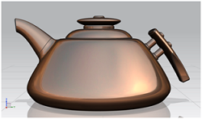
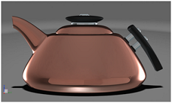

可视化显示模式
预计完成这堂课需要：1–2 分钟
真实着色  以及高级艺术外观显示
以及高级艺术外观显示  是两种提供实时可视化的不同显示模式。
是两种提供实时可视化的不同显示模式。
-
真实着色
 提供艺术外观作为渲染样式
提供艺术外观作为渲染样式 -
高级艺术外观显示
 是在使用真实艺术外观时的默认显示
是在使用真实艺术外观时的默认显示
两种显示模式都包括：
-
全局材料，显示在所有模型对象上的材料
-
背景
-
环境反射
-
光源
-
地板
显示模式间的区别
|
 |
 |
|
|
真实着色提供一组专业的命令集，通过真实着色工具条与真实着色编辑器来控制。
|
高级艺术外观显示可以提供更广泛与专业的特征集，通过资源板、工具条以及对话框来控制。
真实艺术外观任务 |
显示设置如何储存
由于两种显示模式之间的区别，因此它们使用不同的方法来保存设置：
|
|
|
||
|
材料 |
简单的着色器，比如塑料和金属 |
复杂的着色器，比如纹理和汽车喷漆，需要 GPU 可编程渲染器的支持 |
|
|
环境 |
使用简单的环境反射来模拟材料效果 |
使用带高动态范围图像的3D 环境 |
|
|
光源 |
使用单独的光源 |
在环境的动态范围图像上使用真实的基于图像的打光 |
|
|
阴影 |
简单的投影阴影 |
非常逼真的对象间软阴影以及环境阴影 |